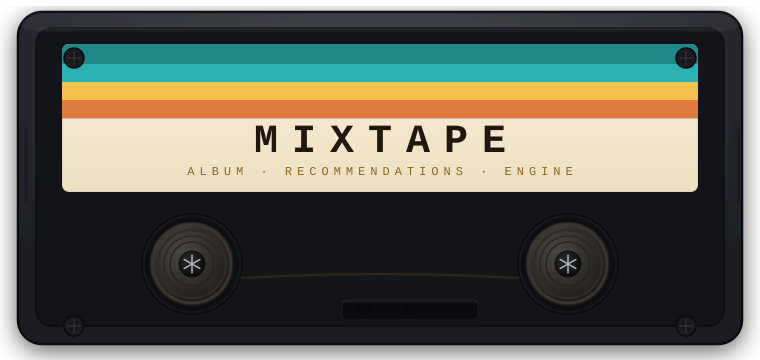

Mixtape finds albums you'll love based on one you already do. Pick any album, adjust six dials — genre, era, country, label, track feel, popularity — and get ten recommendations tuned exactly to what you're after. Powered by the full MusicBrainz catalogue. No account, no streaming service, no internet after setup.
▸ A computer — macOS, Windows, or Linux
▸ Python 3.11 → python.org/downloads
▸ ~500 MB free disk space
▸ A terminal / command promptClick the green Code ▾ button at the top of this page → Download ZIP.
Unzip it somewhere easy to find, like your Desktop.
| System | How |
|---|---|
| Mac | Right-click the mixtape-app folder → New Terminal at Folder |
| Windows | Open the folder → click the address bar → type cmd → press Enter |
| Linux | Right-click the folder → Open Terminal |
python3 -m venv envsource env/bin/activateWindows: second line is
env\Scripts\activate
pip install -r requirements.txtstreamlit run app/app.pyA browser window opens at http://localhost:8505 automatically.
First load takes 20–30 seconds while 1.7 million albums load into memory.
The sidebar has six dials — like a mixing desk:
╔══════════════════════════════════════════════════════╗
║ GENRE Match by musical style and tags ║
║ RECORD LBL Albums from the same label family ║
║ COUNTRY Music from the same country or region ║
║ TRACK STATS Similar album length and song durations ║
║ ERA Same decade or musical period ║
║ POPULARITY Similar critical and listener reception ║
╚══════════════════════════════════════════════════════╝0 = signal ignored · 11 = signal dominates
◀◀ ■ ▶ ▶▶ · MIXTAPE · TPS-90 STEREO · ◀◀ ■ ▶ ▶▶